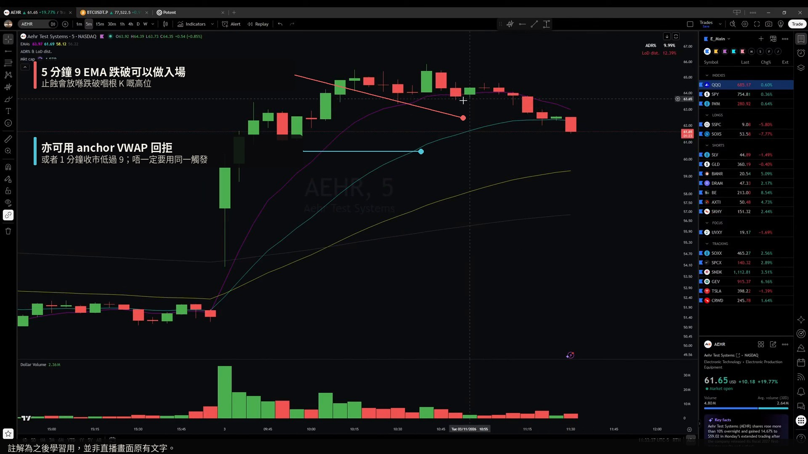
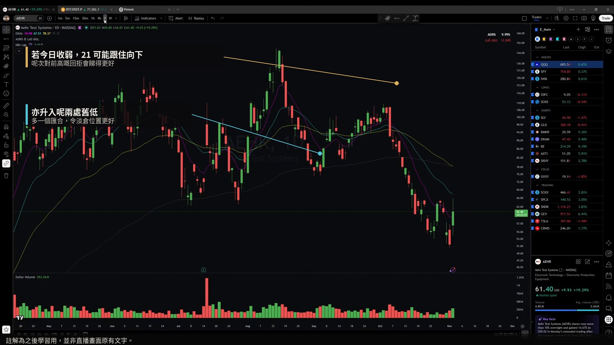
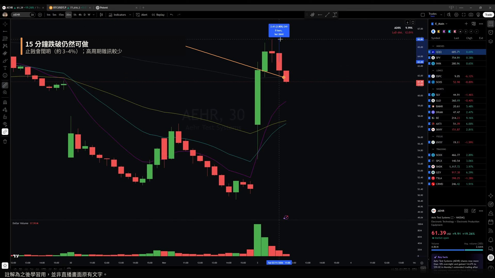

概要
同一隻 AEHR，有好多種可以選嘅入場
2:11:11 開始有人請佢拆 AEHR 呢類高開入阻力嘅淡倉，並問 5 分鐘 9 EMA 跌破可唔可以做入場。2:11:11 畫面仲係 QQQ，約 2:11:47 先到 AEHR 5 分鐘。佢話可以，但 AEHR 行得太快，呢個係事後檢討：5 分鐘跌破嘅止蝕會放喺跌破嗰根 K 嘅高位，可能先被止蝕再再入。若再高少少到「呢條 150 EMA」，或者會更進取地用 1 分鐘跌破。亦可以淡區間上沿，或者用由當日高位拉嘅 anchor VWAP 回拒。入場可以係 AVWAP、跌破、或者反彈，揀自己覺得最好嗰個，唔一定要用同一個觸發。
之後切到日線同 30 分鐘：佢較想再高少少到 21；若 AEHR 今日收弱，21 可能跟住向下，呢次對前高嘅回拒會睇得更好。15 分鐘跌破仍然可做，止蝕會闊啲（約 3–4%），第一次入場仍可能被止蝕；但更高周期雜訊較少、虧損交易亦較少。另外價格亦升入兩處舊低，令淡倉位置更好。聊天室補充小時 100 SMA、swing high、AVWAP 等匯合，佢同意有好多阻力可以一齊睇；100 SMA 呢個周期係發問者提出。
圖一 · 主圖
AEHR 5 分鐘：跌破、止蝕，同 AVWAP 回拒
直播 2:11:47

原話
I'm considering shorting AEHR today after this big gap up into resistance. Could you walk me through how you've approached this type of setup, especially what confirmation you will look for before entering? Will it be a good entry at the five-minute 9 EMA breakdown? Five-minute 9 EMA breakdown will be this one, I think. It's a little bit too wide, but I think AEHR is moving too fast. I think it's possible, but this is trading in hindsight. Five-minute breakdown, so probably I would set the stop at the breakdown candle high, so probably I will also trade this one and then got stopped out and then trade this one, and then looks like this one will be working fine, so working for now. Yeah, like maybe shorting on this one, if it can go a little bit higher to like the 150 EMA here, maybe I will get a little bit more aggressive to short at like the one-minute candle breakdown. And I think if you're shorting somewhere at the higher part of this range, or even at this anchor VWAP rejection from the high of day, intraday high, like these two candles, I think it could be also a short entry. Like you can short at the anchor VWAP, you can short at the breakdown, you can short at this breakdown, so I think there are a lot of potential entries that you can use. Both the shorting of the breakdowns or shorting at the bounce is doable. So I just pick the one that you think is the best or you like the most. So I mean for intraday entries, you don't have to use the same trigger, the same level as me. Like sometimes you don't need to wait for the five-minute breakdown, sometimes you maybe just use the anchor VWAP rejection, sometimes one-minute close below the 9 EMA could be another one.
我考慮今日淡 AEHR，因為呢個大高開入咗阻力。可唔可以講下你會點處理呢類 setup，尤其入場前會睇咩確認？5 分鐘 9 EMA 跌破會唔會係好入場？5 分鐘 9 EMA 跌破就係呢一個，我諗。有啲闊，但 AEHR 行得太快。我覺得可以，不過呢個係事後檢討。5 分鐘跌破嘅話，止蝕大概會放喺跌破嗰根 K 嘅高位，所以我可能會做呢一個，然後被止蝕，再做呢一個，跟住呢一個睇落就行得通，而家暫時得。係，或者淡呢一個；如果可以再高少少到呢條 150 EMA，我或者會更進取啲，用 1 分鐘跌破去淡。我覺得如果你喺呢個區間較高嘅位置淡，甚至係由當日高位拉嘅 anchor VWAP 回拒，即係呢兩根，都可以係淡倉入場。你可以淡 anchor VWAP，可以淡跌破，可以淡呢一次跌破，所以有好多潛在入場。淡跌破或者淡反彈都做得到。你就揀自己覺得最好、或者最鍾意嗰個。日内入場唔一定要用同我一樣嘅觸發同位置。有時唔使等 5 分鐘跌破，有時只用 anchor VWAP 回拒，有時 1 分鐘收市低過 9 EMA 都可以。
點樣讀
5 分鐘圖把幾個可能入場一齊出示：9 EMA 跌破、被止蝕後再入、區間上沿，同埋當日高位嘅 anchor VWAP 回拒。佢強調呢個係事後檢討，而且唔一定要用同一個觸發。
「150 EMA here」出現喺 5 分鐘圖語境，圖例冇印周期，本頁唔標死邊一條線。止蝕「放喺跌破 K 高位」係佢描述自己做法，唔寫死點數。
圖二
AEHR 日線：若收弱，21 可能跟住向下
直播 2:15:40

原話
Yeah, I would prefer to go a little bit higher to the 21, but sometimes yeah you won't get the best entry. And if AEHR is going to close weak today, maybe the 21 is going to follow through down, and then it makes this rejection look much better. It's also like the fakeouts, or like this resistance from the previous highs, so yeah could be a short entry today. And another point on AEHR is it's also rallying into these two swing lows here too. It makes this one like a better entry for the shorts.
係，我較想再高少少到 21，但有時你會唔會得到最好入場。如果 AEHR 今日收弱，或者 21 會跟住向下，咁呢次回拒就會睇得更好。呢度亦有假突破，或者前高嘅阻力，所以今日都可以係一個淡倉入場。另一點係，AEHR 亦升入呢兩處舊低，令呢個淡倉入場更好。
點樣讀
日線見到價格靠近前高同兩處舊低。佢較想等到 21，並把「收弱之後 21 跟住向下」講成會令回拒更好睇，而唔係已經發生。
兩處舊低係額外匯合，用來解釋點解佢覺得呢個淡倉位置更好。圖例冇印 21，只標口中位置就喺呢附近。
圖三
更高周期：15 分鐘跌破仍然可做，雜訊較少
直播 2:16:20

原話
Again, like these are the entries from my style for the really like tight stops. You don't have to follow it. Like if you're setting like two to three percent stops, I think if you use the 15-minute candle breakdown, it's still very tradable, slightly above 3% stop, 4% stop. So if you use like a 15-minute candle breakdown, no, probably you'll also get stopped out from the first entry, so yeah, but definitely if you use a higher time frame, you would get less noise, you would get less losing trades. Yeah, many confluence on AEHR, hourly 100 SMA, swing high, anchor VWAP. Yeah, you got, I think you got a really good point, and yeah, I really like how you come up with like different type of resistance in the same chart.
再講一次，呢啲係我自己偏緊止蝕嘅入場方式，你唔一定要跟。如果你用大約兩至三個百分嘅止蝕，我覺得用 15 分鐘跌破仍然好可做，止蝕稍高過 3%、4%。用 15 分鐘跌破嘅話，第一次入場可能都會被止蝕；但用更高周期，肯定雜訊會較少，虧損交易亦會較少。係，AEHR 有好多匯合：小時 100 SMA、擺動高位、anchor VWAP。我覺得你講得好，我好鍾意你喺同一張圖找出唔同類型嘅阻力。
點樣讀
講 15 分鐘跌破同較闊止蝕時，畫面已切到 30 分鐘，用來對照更高周期。3–4% 係佢描述止蝕大約有幾闊，畫面核對唔到實際點數，唔寫死。
小時 100 SMA、swing high、AVWAP 係聊天室列嘅匯合，佢同意「同一張圖有好多阻力」，但 100 SMA 呢個周期係發問者提出，圖例冇印，本頁唔標死邊一條線。
附註
注意事項
- 2:11:11 開始答問時畫面仲係 QQQ；AEHR 約 2:11:47 先出現。
- Whisper 多次把 AEHR 聽成 ehl／AHR，把 9 EMA 聽成 nine year may，把 anchor VWAP 聽成 end coffee web、anchor view web、entry web、free web。本頁按畫面同語境更正。
- 「hourly 100 SMA」係聊天室提出嘅匯合，佢同意有好多阻力，但本頁唔把某條線寫死成 100 SMA。
- 3–4% 止蝕同「可能先被止蝕」都係原話描述，畫面睇唔到成交價或損益，所以唔寫死呢啲數字。
- 圖例多數只有顏色同數值，冇印均線周期。本頁唔會把某條彩線寫死成 9、21 或者 150。
免責聲明：呢份係教育拆解，唔係投資建議，亦唔好當作買賣指示。